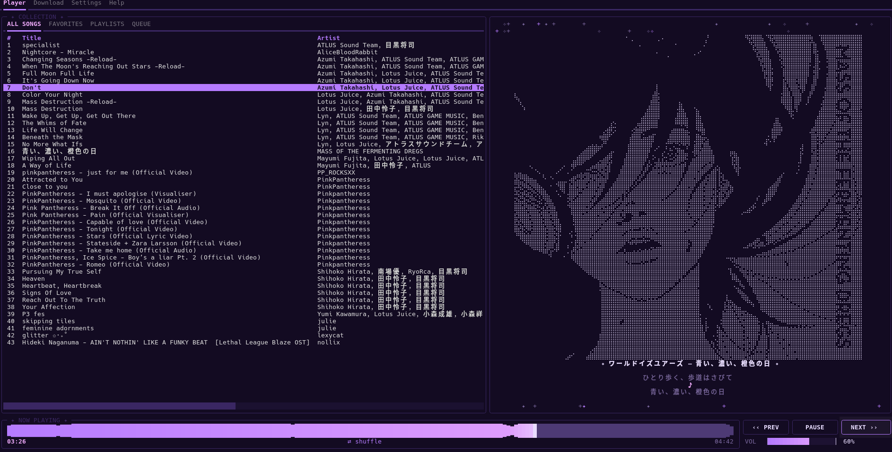

Download songs and whole albums with synced lyrics, then play them without leaving the command line.
In the real app, press ? to open the Help tab with every key. Try it above: click Help.

Search a song or paste a YouTube Music album or playlist link. Songs you already own are skipped, and links queue up one after another.
Synced lyrics from LRCLIB, then AZLyrics, then Genius, saved as .lrc files next to each song. A tool fills in any that are missing.
Favorites, playlists, an up-next queue, sorting, and album fixes. It remembers your volume, shuffle, repeat and where you stopped.
Built-in themes and a live colour editor. Change the cover style, the lyric window and every key in config.toml.
# Linux: Arch, Debian/Ubuntu, Fedora
git clone https://github.com/PiizzS2/sonora.git
cd sonora
./install
sonora
The installer adds mpv and ffmpeg, builds a private Python environment, and creates the sonora command.
# Windows (Python 3.11+) winget install Python.Python.3.12 # then double-click: install.bat sonora.bat
Use Windows Terminal rather than the old cmd window.
Press ? in the app to open the Help tab with the full list. Every key can be rebound under [keys] in ~/.config/sonora/config.toml.
F1 player F2 download F3 settings Enter play / download p pause n / b next / prev , / . seek 1 / 2 volume m shuffle r repeat v switch view q quit